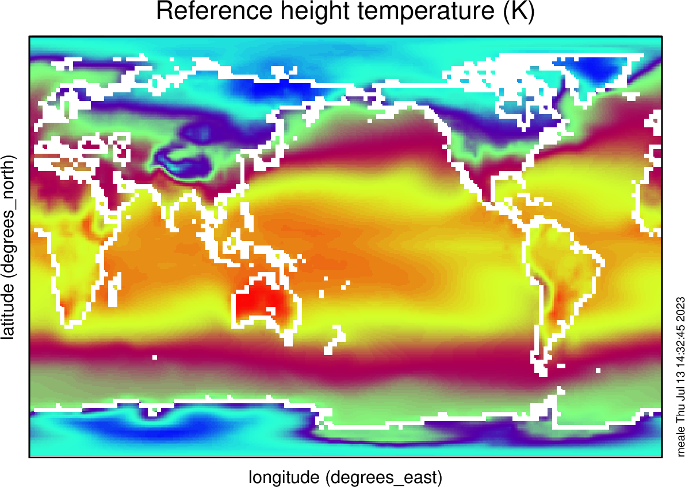
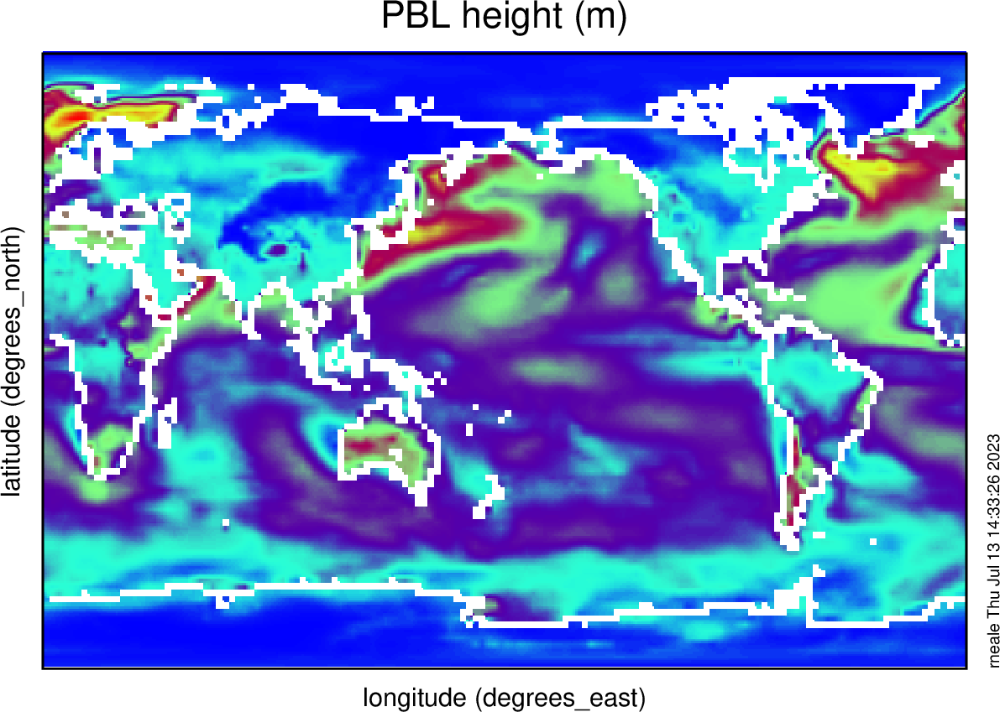

Community Earth System Model#
The aim of this notebook is guide the creation, simulation and analyisis of CESM global, multi-annual simulations.
With these exercises we hope for you to achieve#
An understanding of the workflow for a climate model
The ability to perform basic sensitivity experiments
An understanding of how boundary layers vary in different climate regimes and how they may be sensitive to different boundary layer scheme formulations
A baseline diagnosis of multiple CESM experiments
Note
To the greatest extent possible we will follow the CESM tutorial for setting up, submitting, running and processing output from simulations. In particular what follows below is a much abbreviated version of the more comprehensive CESM workflow
Description of Model Cases and Configurations#
The experiments we will perform with CESM will comprise an atmosphere model, land model and simplified (thermodynamic-only) sea-ice model over a global domain. An ocean model will not be used, instead being replace by fix or prescribed values of Sea Surface Temperature (SSTs). We will use a relatively course horizontal resolution, nomilly 2 degress in both latitude and longitude.
Test run of CESM cases#
Please follow the basic test cases from the CESM tutorial here. These are a little different from what we wish to run: namely we will run F2000climo compsets: Atmopshere and land with fixed SST as described above. A summary of the steps with slight modification for our purposes follow.
Setup my workspace
cd /glade/work/$USER/ASP2023
mkdir cesm_cases
mkdir cesm_code
Download CESM code base using
gitand checkout the required code branch
cd /glade/work/$USER/ASP2023/cesm_code
git clone https://github.com/ESCOMP/CESM.git my_cesm_code
cd my_cesm_code
git checkout release-cesm2.1.4
Pull in external model code
./manage_externals/checkout_externals
Find the cesm scripts directory
cd cime/scripts
Create a new case (experiment) with all the baseline information you need for a run with prescribed SSTs and year 2000 climatology (
COMPSET=F2000climo) at a relatively course resolution of 2 degrees (RES=f19_f19_mg17). MaybeCASE='cesm_control'(will refer to$CASEbelow) Therefore:
./create_newcase --case /glade/work/$USER/ASP2023/cesm_cases/cesm_control --res f19_f19_mg17 --compset F2000climo --run-unsupported --project NASP0013
Note
The configuration is not officially supported, but it is fine for our use here.
The project code NASP0013 is the ASP2023 computing account key that will be used for submitted CESM jobs. Type groups in a terminal to make sure you are part of this group.
Case directory This command should have a set up a series of scripts, files and directories in your
casedirectory
cd /glade/work/$USER/ASP2023/cesm_cases/$CASE
The experimental still requires the following default setup to be performed
./case.setup
Model build and compilation You main model build which, includes the
compile, now needs to be performed. Theqcmdindiactes that the task will be pushed of theloginmade you are currently working on, and submitted to acomputeto avoid congestion on the often busy login nodes.
qcmd -- ./case.build
The build will take around 10 minutes
Note
You can check job status using the command
qstat -u $USER
If it completes with no errors, the last line of screen output should be
MODEL BUILD HAS FINISHED SUCCESSFULLY
Determine run length With the default setup you have built it is configured for a default run period of 5 days (very short). You can tell this by running
[xml]()interogation scripts in the the case directory that operate on the xml files e.g.,env_case.xml. Try and poke around in these files as they contain parameters controling multiple aspects of the run configuration.
Key variables for run length are STOP_N and STOP_OPTION. Find the descriptions with the following (from your case directory)
./xmlquery --description STOP_N
./xmlquery --description STOP_OPTION
./xmlquery STOP_N
./xmlquery STOP_OPTION
Hopefully it is straight forward from this information to determine that the model will run for 5 =STOP_N days =STOP_OPTION.
This is the default setup so we don’t have to chnage anything else. Note
that we will be running for multiple years in your sensitivity experiments.
Note
To ensure we use the right project key and we utilise our reseved compute nodes include the following
./xmlchange --force JOB_QUEUE=S2036390
./xmlchange PROJECT=NASP0013
Submit a test run This short
out of the box configurationis ready to run.
./case.submit
If the submit is successful the last two lines of output should look something like:
Submitted job case.run with id 1988240.chadmin1.ib0.cheyenne.ucar.edu
Submitted job case.st_archive with id 1988241.chadmin1.ib0.cheyenne.ucar.edu
These contain the job ids seprately for the model simulations case.run and for post completion data archiving case.st_archive and will help you idenitfy the jos when you query their status in the queue.
./qstat -u $USER
If you get in the queue this job should complete in a matter of minutes. When you query the queue and it lists the above job numbers still, the run is still in progress. If there is now output then the job may have completed or crashed.
To see if the run finished successfully examine the tail of the run output file
tail run.<job name>.o<job id #> (e.g. like run.cesm_control.o1988240>
Near the end you should see
MODEL EXECUTION HAS FINISHED
A quick check of you run directory will show you all the output that is produced from this experiment
cd /glade/scratch/$USER/$CASE/run
No output yet..
If the run was successful then…
Submit a Longer Run
Again use the xml commands to query the case xml files and change the values
cd /glade/work/$USER/ASP2023/cesm_cases/$CASE
./xmlchange STOP_OPTION=nmonths
./xmlchange STOP_N=1
This will run for 1 month. Now simply submit the job again.
./case.submit
If successful (see above check method) then check the run directory for output files
cd /glade/scratch/$USER/archive/$CASE/atm/hist
The output or history files are moved here at the the end of each run and will have the form
$CASE.cam.h0.0001.01.nc
This means that a netcdf file with monthly averaged data was produced for January in the first year of the run.
Take a look at the contents
ncdump -h $CASE.cam.h0.0001.01.nc | less
ncview $CASE.cam.h0.0001.01.nc
Note
Plot the 2-m Temperature TREFHT and the boundary layer depth PBLH


Submit a Climate Run
You are now ready to run a longer simulation for 3 years.
cd /glade/work/$USER/ASP2023/cesm_cases/$CASE
./xmlchange STOP_OPTION=nmonths
./xmlchange STOP_N=36
Repeat submission as above.
Extended case: Climate change simulation
We will run a second simulation that modifies the Sea Surface Temperature (SST) to be SST.new=SST.f2000+4K this is a basleine climate sensitivty experiment used in CMIP protocals.
See Cecile's presentation for details on how to chnage to the +4K SST dataset
/glade/work/rneale/ASP2023/data/sst_HadOIBl_bc_1.9x2.5_clim_SST+4K.c230718.nc
Create climatologies
If you run for more than one year with CESM it is useful to produce climatologies
Let’s move to the archive directory where all your monthly mean history h0 output is for a particular case (e.g., $CASE - cesm_control for our control here)
cd /glade/scratch/$USER/archive/$CASE
Create a directory for climatology data
mkdir climo
cd climo
For each month create a single averaged file using ncea commands (make sure you have input the command module load nco. Below XX is run for each separate month of the year; 01 through 12
ncea ../atm/hist/$CASE.cam.h0.????-XX.nc $CESM_XX_climo.nc
These are then the climatologies you can use in your analysis. Feel free to use either these suggested python-based or remind yourself of the other diagnostic tools to interogate the data.